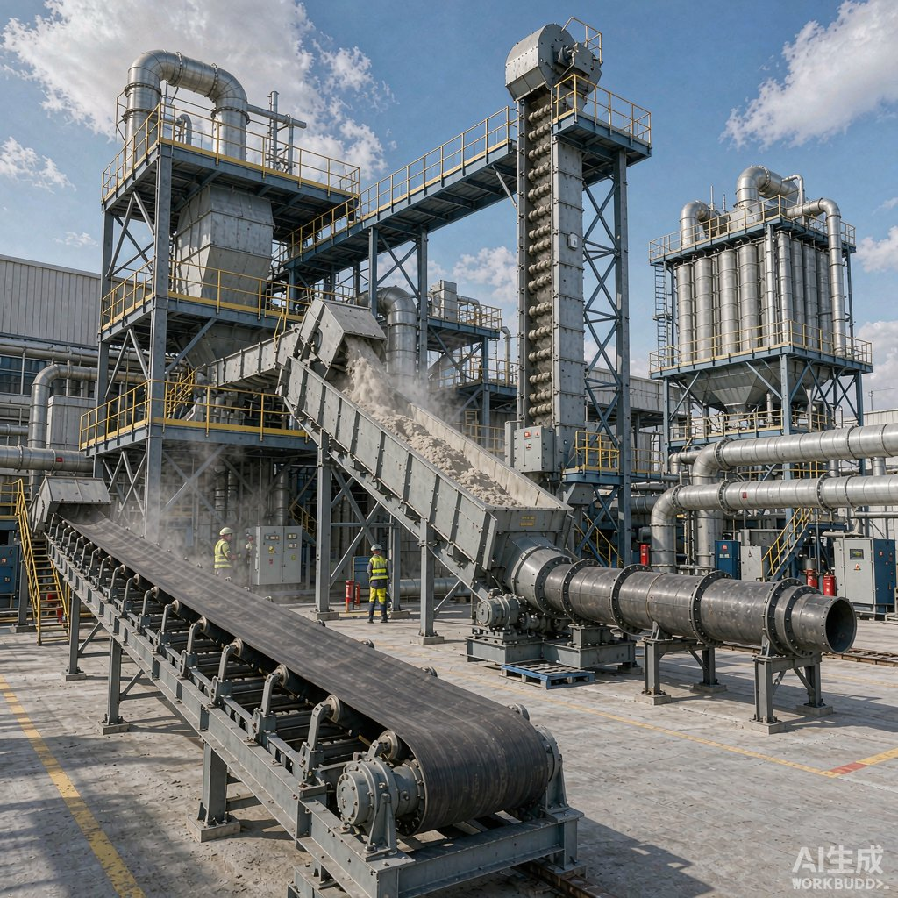

Choosing the right bulk material handling equipment is the difference between a conveying system that runs for years with minimal downtime and one that clogs, leaks dust, or fails prematurely. This guide walks plant engineers and procurement teams through a structured selection method — from characterizing the material to picking each machine in the line.
In this article
1. Characterize your material first 2. Define the process parameters 3. Choose the horizontal conveying method 4. Choose vertical lifting (bucket elevators) 5. Dust collection and environmental control 6. Feeding, metering, and isolation 7. Crushing and screening when needed 8. Safety, sealing, and maintenance 9. Five-step selection checklist Frequently asked questions1. Characterize Your Material First
Every equipment choice flows from material properties. Before looking at any machine, document these parameters — they decide the equipment type, material of construction, and safety features:
| Property | Why it matters |
|---|---|
| Particle size & shape | Fine powders need sealing and dust control; coarse or lump material needs larger inlets and impact protection. |
| Bulk density | Drives capacity, drive power, and equipment size for a given throughput. |
| Moisture content | Wet or sticky material clogs screws and buckets; free-flowing dry material is easier to convey. |
| Abrasiveness | Abrasive material (clinker, slag, ore) needs wear liners and hardened chains or flights. |
| Temperature | Hot material (>120°C) requires heat-resistant belts, chains, and seals. |
| Explosiveness / toxicity | Combustible dust needs explosion protection; toxic or oxygen-sensitive material needs gas-tight sealing. |
| Corrosiveness | Acidic or alkaline material requires stainless steel or special coatings. |
2. Define the Process Parameters
With the material characterized, define how it must move through the plant:
- Required capacity (t/h): peak and average rates, including future expansion margin (typically +15–20%).
- Route geometry: horizontal distance, lift height, number of bends, and allowable incline angle.
- Feed and discharge points: single or multiple; intermediate inlets/outlets simplify complex layouts.
- Continuous vs. batch: batch operation allows smaller buffers; continuous lines need steady, metered feed.
- Upstream / downstream interfaces: silos, reactors, mills, packers — the conveyor must match their inlet and outlet heights.
3. Choose the Horizontal Conveying Method
Horizontal and inclined transport is the backbone of any plant. The four main options each suit different duties:
| Equipment | Best for | Capacity | Key limitation |
|---|---|---|---|
| Belt conveyor | High-volume, long-distance, non-sealing transport of granular or lump material | Up to ~2000 t/h, lengths 100 m+ | Open design; weak for fine dust and sealed duties |
| En-masse (chain scraper) conveyor | Sealed, dust-free transport of powders and granules; multiple in/out points | 6–500 t/h | Higher chain wear on very abrasive material |
| Screw conveyor | Short-distance, fully enclosed metering of powders and sticky material | Up to ~100 t/h, lengths <40 m | High power per ton; not for hard lumps or very abrasive duty |
| Apron conveyor | Heavy, hot, or sharp-edged bulk solids (clinker, scrap, rock) | Up to ~1000 t/h | Heavy, higher cost, slower speed |
For most powder and granule applications where dust control matters, the en-masse chain conveyor is the most versatile sealed option. For very high tonnage over long distances, the belt conveyor wins on cost and energy.
4. Choose Vertical Lifting (Bucket Elevators)
When material must rise several meters, a bucket elevator is far more compact than an inclined conveyor. Three common types:
- TDG (steel cord belt): highest lift (up to ~80 m), smooth, ideal for hot, abrasive, or explosion-proof duties.
- NE (plate chain): deep buckets, high capacity, good for cement, grain, and mineral powders.
- TH (ring chain): economical general-purpose vertical lift for free-flowing material.
For combustible dust or toxic material, choose a gas-tight, explosion-proof design (see the TDG gas-tight elevator article).

Plant Overview5. Dust Collection and Environmental Control
Any point where material falls, transfers, or discharges generates dust. A central or point-of-source dust collector protects workers, meets emission limits, and recovers product. Size it from the total air volume at transfer points, and connect it to sealed conveyor and elevator casings for a closed loop.
6. Feeding, Metering, and Isolation
Steady feed protects downstream equipment and improves accuracy:
- Feeders: rotary, vibrating, or weigh feeders meter material into the conveyor at a controlled rate.
- Isolation valves: rotary valves, flap dampers, slide gates, and diverter valves control flow, prevent air leakage, and route material to multiple bins.
The industrial valve selection guide covers this in detail.
7. Crushing and Screening When Needed
If the incoming material is oversized or variable, add crushing equipment to a manageable top size and screening equipment to remove fines or oversize. This protects conveyors and elevators from impact and blockage.
8. Safety, Sealing, and Maintenance
- Explosion protection: for combustible dust, specify explosion-proof motors, vent panels, spark detection, and belt monitoring per ATEX / NFPA / GB standards.
- Sealing: gas-tight casings with gasketed flanges and shaft seals keep toxic or oxygen-sensitive material contained.
- Accessibility: inspection ports, quick-release doors, and wear-part kits reduce mean repair time.
- Spare parts: standardize on a supplier with a documented spare parts program to avoid long shutdowns.
9. Five-Step Selection Checklist
- Profile the material — size, density, moisture, temperature, abrasiveness, hazard.
- Map the route — distance, lift, bends, in/out points, interfaces.
- Pick the conveyor type — belt for volume/distance, en-masse for sealed powders, screw for short metering, apron for heavy/hot solids.
- Pick vertical lift — TDG / NE / TH bucket elevator sized to height and capacity.
- Add support systems — dust collection, feeding/metering, valves, crushing/screening, and safety features.
Frequently Asked Questions
What is the most important factor when selecting bulk material handling equipment?
The material's physical properties — particle size, bulk density, moisture, temperature, abrasiveness, and hazard class. These determine the equipment type, construction material, and safety features before any capacity calculation.
Which conveyor is best for horizontal bulk material transport?
It depends on the duty. Belt conveyors are best for high tonnage over long distances; en-masse chain conveyors are best when dust-tight sealing and multiple in/out points are required; screw conveyors suit short, enclosed metering; apron conveyors handle heavy, hot, or sharp material.
When should I use a bucket elevator instead of an inclined conveyor?
Use a bucket elevator when the lift height exceeds roughly 10–15 m or when floor space is tight, because a vertical elevator occupies far less plan area than a long inclined conveyor for the same height gain.
How do I choose between a belt, chain (en-masse), and screw conveyor?
Choose belt for high volume and long distance, en-masse chain for sealed powder handling with multiple feed/discharge points, and screw for short-distance enclosed metering of powders or sticky material. Abrasive or high-temperature duties favor chain or apron designs.
What explosion protection is required for combustible dust?
At minimum, explosion-proof motors, rupture (vent) panels, belt slip and misalignment switches, and zero-speed monitoring. Larger systems add spark detection and suppression, designed to ATEX, NFPA 68/69, or equivalent national standards.
How do I size a system for my required capacity?
Start from peak throughput in t/h, add a 15–20% expansion margin, then select equipment whose rated capacity, speed, and drive power cover that rate at your material's bulk density and route geometry. Always confirm with the supplier using your actual material data.
Need Help Sizing Your Conveying System?
Send us your material data sheet, required capacity, route drawing, and any explosion-protection or sealing requirements. Our engineering team will propose a complete bulk material handling line — conveyors, elevators, dust collection, feeding, and valves — sized for your plant.
Request a Design Proposal